Laporan Praktikum 7: Database Migration, Seeding, dan Arsitektur MVC
Mata Kuliah: Pemrograman Web • Universitas Andalas
Pendahuluan
Praktikum ke-7 ini berfokus pada penerapan arsitektur Model-View-Controller (MVC) di dalam framework Laravel. Implementasi ini mencakup pengelolaan siklus basis data menggunakan Migration untuk otomasi skema struktur tabel, penggunaan Seeding untuk pengisian komponen data awal (*dummy*), serta pemanfaatan komponen Eloquent ORM, Controller, dan Blade Layouting untuk menyajikan data secara dinamis ke browser.
1. Database Migration
Langkah pertama dimulai dengan membuat file skema migration baru untuk tabel produk melalui terminal menggunakan perintah Artisan CLI:
php artisan make:migration create_products_table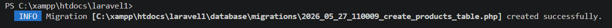
Setelah berkas berhasil digenerate, struktur skema kolom tabel didefinisikan di dalam method up() pada file direktori database/migrations/. Atribut tabel diatur untuk mengelola field berupa id, name (string), price (integer), description (text), serta kolom penanda waktu otomatis timestamps.
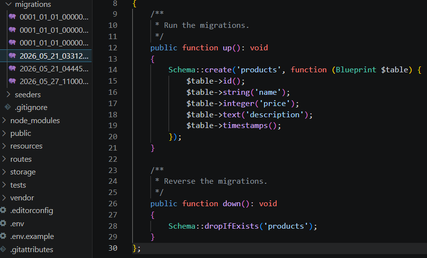
2. Database Seeding
Seeding digunakan untuk mempersiapkan data uji coba awal ke dalam tabel basis data. Pembuatan komponen class seeder baru dieksekusi melalui baris perintah terminal berikut:
php artisan make:seeder ProductSeeder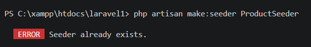
Selanjutnya, pemanggilan eksekusi ProductSeeder didaftarkan ke dalam method run() pada file master database/seeders/DatabaseSeeder.php agar dapat dipanggil serentak oleh sistem.
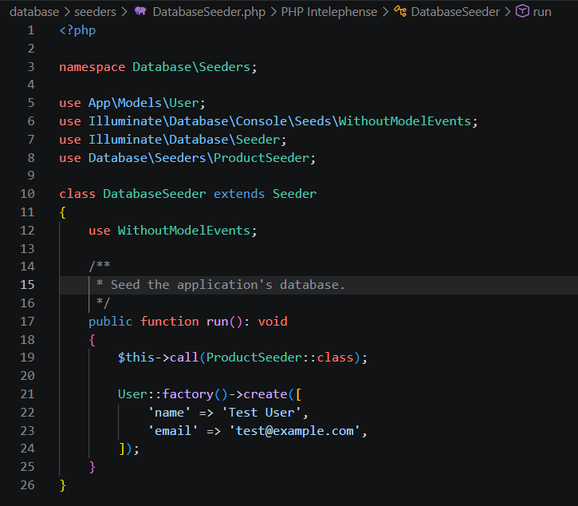
Di dalam berkas file komponen ProductSeeder.php, logika pengisian record data diimplementasikan menggunakan Query Builder DB::table('products')->insert() untuk memasukkan dua item produk dummy, yaitu data spesifikasi objek Laptop dan Mouse lengkap beserta penanda waktu now().
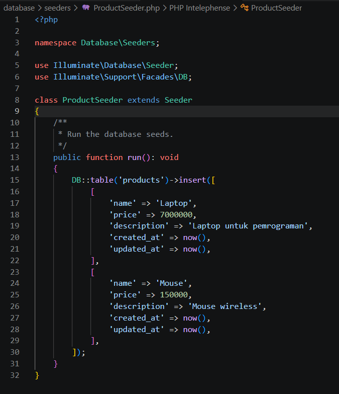
Berikut adalah detail kode potongan registrasi pemanggilan sub-class seeder produk di dalam file master penanggung jawab basis data:
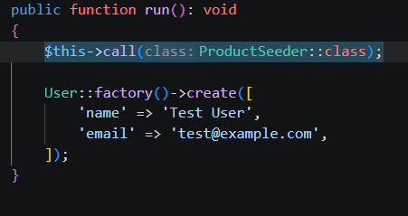
Untuk mengeksekusi pengisian data saja ke dalam tabel, perintah artisan berikut dapat dijalankan langsung di terminal:
php artisan db:seed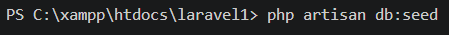
Sedangkan untuk membangun ulang seluruh struktur skema tabel dari awal (*drop-and-recreate*) sekaligus menjalankan fungsi pengisian baris data dummy di terminal, digunakan perintah kombinasi fresh seed berikut:
php artisan migrate:fresh --seed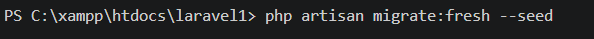
3. Konfigurasi Web Routing
Perutean sistem dikonfigurasi di dalam berkas file routes/web.php. Pada praktikum ini, ditambahkan sebuah rute endpoint baru dengan metode HTTP GET ke URL rute /products yang diarahkan langsung untuk memicu method index milik class ProductController.
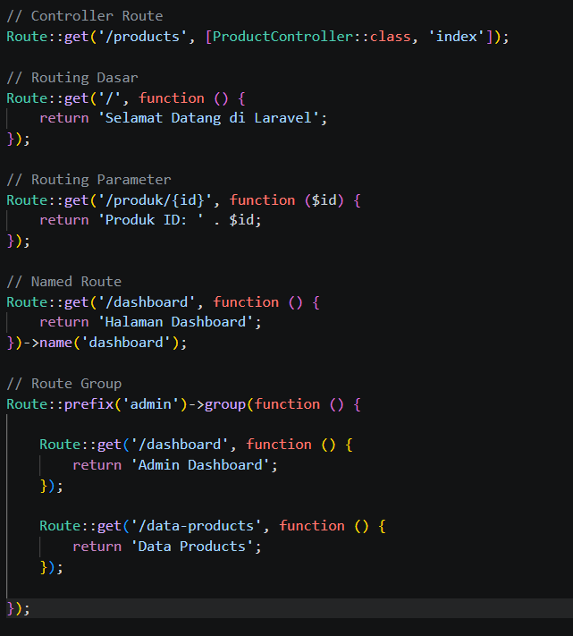
4. Implementasi Model dan Controller (MVC)
Sebuah model data Eloquent bernama Product.php diimplementasikan di folder app/Models/. Properti berupa properti array protected $fillable disisipkan untuk mengamankan data field kolom mana saja yang diizinkan sistem saat melakukan operasi pengisian mass-assignment.
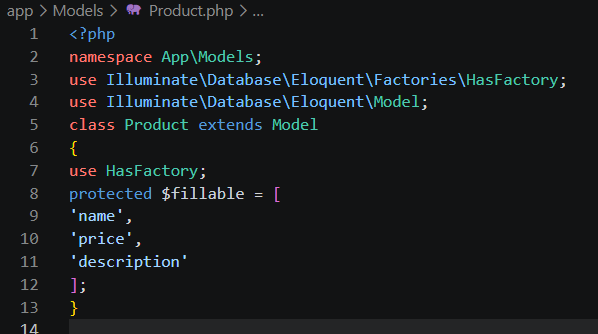
Pembuatan komponen class logic controller baru didefinisikan menggunakan perintah baris terminal berikut:
php artisan make:controller ProductController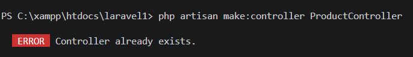
Di dalam berkas file ProductController.php, dituliskan sebuah method logika bernama index(). Fungsi dari kode ini adalah menarik seluruh isi baris data produk dari database menggunakan method ORM master Product::all(), lalu meneruskannya langsung ke view penampil bernama `products` menggunakan bantuan fungsi bawaan compact().
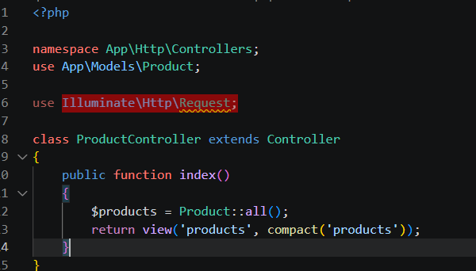
Berikut adalah visualisasi baris pendaftaran rute controller terintegrasi di dalam file konfigurasi rute web utama:
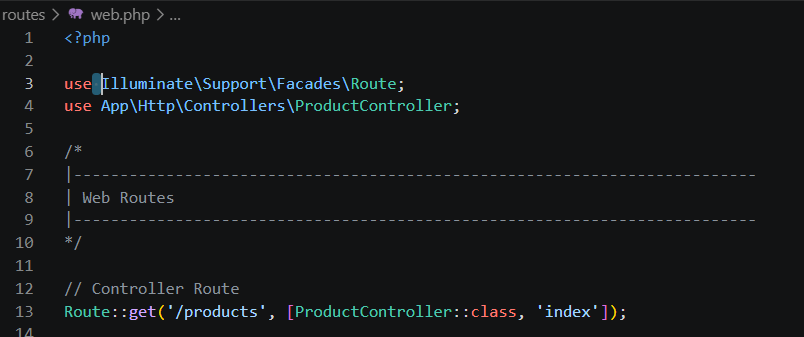
Diujikan juga alternatif pembuatan rancangan arsitektur controller berskala penuh menggunakan flag option `--resource` bawaan framework untuk mempermudah pengerjaan operasi CRUD kompleks di masa mendatang:
php artisan make:controller ProductController --resource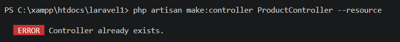
5. Blade Template Layouting dan Hasil Verifikasi
Rancangan antarmuka tampilan menerapkan konsep layouting di file resources/views/layouts/app.blade.php. Bagian utama kerangka HTML ditambahkan tag judul teks statis h1 serta directive penampung dinamis halaman @yield('content').
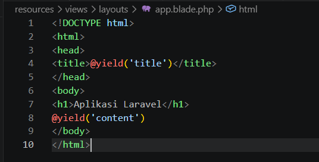
Halaman akhir view memanggil kerangka master tersebut lalu mengekstrak serta mencetak setiap baris koleksi data nama item produk ke dalam elemen daftar list HTML. Tahap akhir pengujian diverifikasi dengan mengakses rute URL lokal di alamat http://127.0.0.1:8000/products pada web browser. Browser sukses merender teks judul layout utama bersama dengan list baris entri nama item data seeder dari basis data.
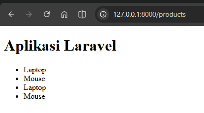